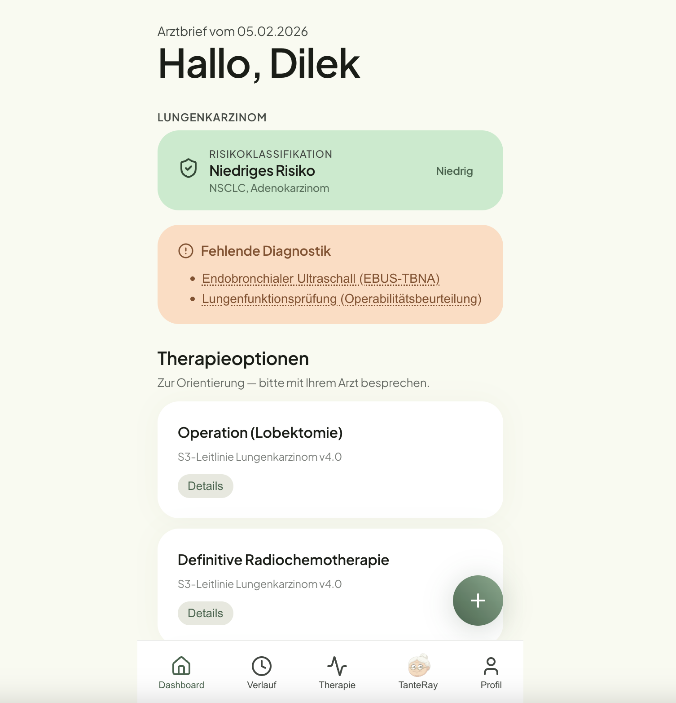
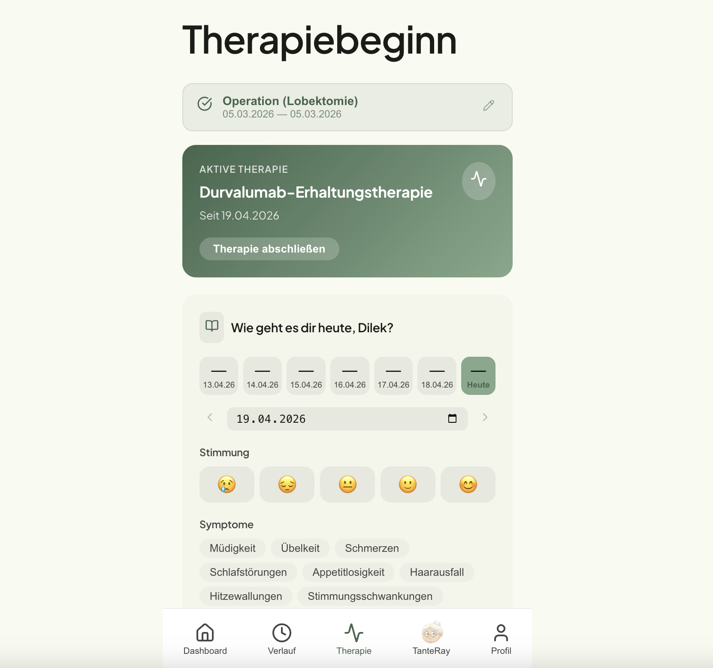
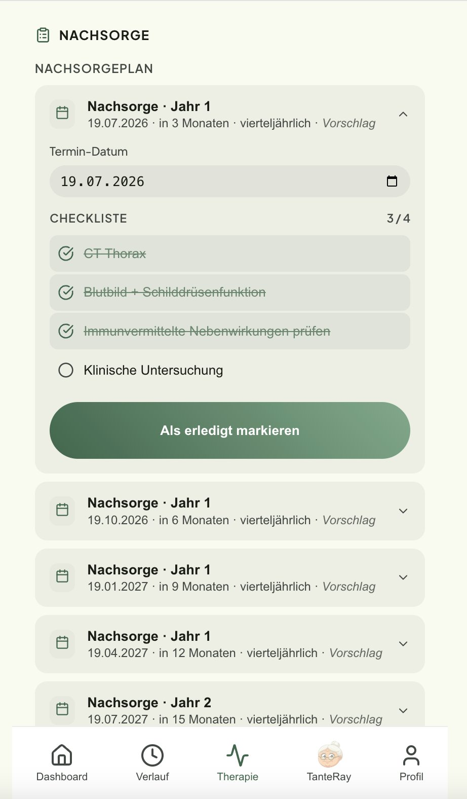

OnkoRay erklärt deinen Arztbrief in klarer, ruhiger Sprache — leitlinienbasiert und einfühlsam. Damit du gut informiert ins Gespräch mit deinem Behandlungsteam gehst.

TanteRay„Ich gehe deinen Befund mit dir durch — ganz in Ruhe.“
Nach der Krebsdiagnose bleiben oft mehr Fragen als Antworten. Der Arztbrief ist für Fachleute geschrieben — nicht für dich.
OnkoRay übersetzt deinen Befund in eine verständliche Sprache, die Mut macht — und zeigt dir, was die Leitlinien für deine Situation vorsehen.
Kein Fachjargon, kein Stress. Du gibst das Tempo vor.
Mach einfach ein Foto oder lade das PDF deines Arztbriefs hoch. Den Rest übernimmt OnkoRay.
OnkoRay erkennt die wichtigen Werte und erklärt sie dir Schritt für Schritt — du bestätigst, was stimmt.
Du siehst, was die S3-Leitlinie für deine Situation vorsieht — und wirst durch Therapie und Nachsorge begleitet.
OnkoRay zeigt dir dein Risikoprofil und alle leitlinienkonformen Optionen in klarer Sprache. Jede Information mit Quelle, damit du nichts einfach glauben musst.
Halte fest, wie es dir geht — Stimmung, Symptome, Termine. So hast du beim nächsten Arztbesuch alles parat und vergisst keine wichtige Frage.

OnkoRay erstellt dir einen Nachsorgeplan angelehnt an die S3-Leitlinie — mit Checkliste und Terminen, damit du dich auf das Wesentliche konzentrieren kannst: dich.

Du wählst, wer dich begleitet — und kannst jederzeit wechseln.
Für dich, wenn du strukturierte Einordnung und klare Fakten brauchst.
Für dich, wenn dir Wärme den Zugang öffnet und du Halt suchst.
OnkoRay unterstützt das Gespräch mit deinem Behandlungsteam. Die Entscheidung über deine Therapie triffst du gemeinsam mit deiner Ärztin oder deinem Arzt — nie die App.
Alle Inhalte stützen sich auf die S3-Leitlinien der AWMF — jeweils mit klarer Quellenangabe, nachvollziehbar und transparent.
OnkoRay entsteht unter Leitung einer praktizierenden Radioonkologin — fachlich fundiert und nah an der Versorgung.
Datenschutz nach DSGVO und deutschen Sicherheitsstandards. Deine Gesundheitsdaten bleiben geschützt.
Transparenz statt Empfehlung: OnkoRay stellt Optionen neutral dar — ohne Wertung. So behältst du die Kontrolle über deine Entscheidungen.
Praktizierende Radioonkologin. Sie sorgt dafür, dass jede Information fachlich stimmt und sich an den aktuellen Leitlinien orientiert.
Verantwortlich für eine App, die sich gut anfühlt — verständlich, einfühlsam und einfach zu bedienen, gerade in einer schweren Zeit.
Nein. OnkoRay ist eine Orientierungshilfe, keine Therapieempfehlung. Die App zeigt dir alle leitlinienkonformen Optionen neutral und verständlich — ohne Wertung. Die Entscheidung triffst du gemeinsam mit deinem Behandlungsteam. OnkoRay ersetzt nie das ärztliche Gespräch.
Noch nicht ganz — OnkoRay ist in Entwicklung. Wenn du dich anmeldest, halten wir dich auf dem Laufenden und sagen dir Bescheid, sobald es losgeht.
Aus den S3-Leitlinien der AWMF — den maßgeblichen medizinischen Leitlinien in Deutschland. Jede Aussage ist mit ihrer Quelle hinterlegt. Die Werte aus deinem Arztbrief werden erkannt und von dir bestätigt, bevor sie eingeordnet werden.
Für erwachsene Menschen mit einer Krebsdiagnose, die ihre Situation besser verstehen möchten. Angehörige kannst du auf Wunsch dazuholen, damit ihr gemeinsam informiert seid.
Ja. Der Schutz deiner Gesundheitsdaten hat höchste Priorität. OnkoRay wird nach DSGVO und den geltenden deutschen Sicherheitsstandards entwickelt.
Wir entwickeln OnkoRay mit und für Betroffene. Melde dich an und erfahre als Erste:r, wenn es losgeht.
Kein Spam. Nur eine Nachricht, wenn es Neues gibt.
Du bist Klinik oder möchtest als Pilot-Partner mitwirken? Schreib uns.
OnkoRay ist eine Orientierungshilfe zur Unterstützung des Arzt-Patienten-Gesprächs und ersetzt keine ärztliche Beratung, Diagnose oder Behandlung. Alle Inhalte dienen ausschließlich deiner Information. Bei medizinischen Fragen wende dich bitte an dein Behandlungsteam. OnkoRay ist noch nicht als Medizinprodukt zugelassen.